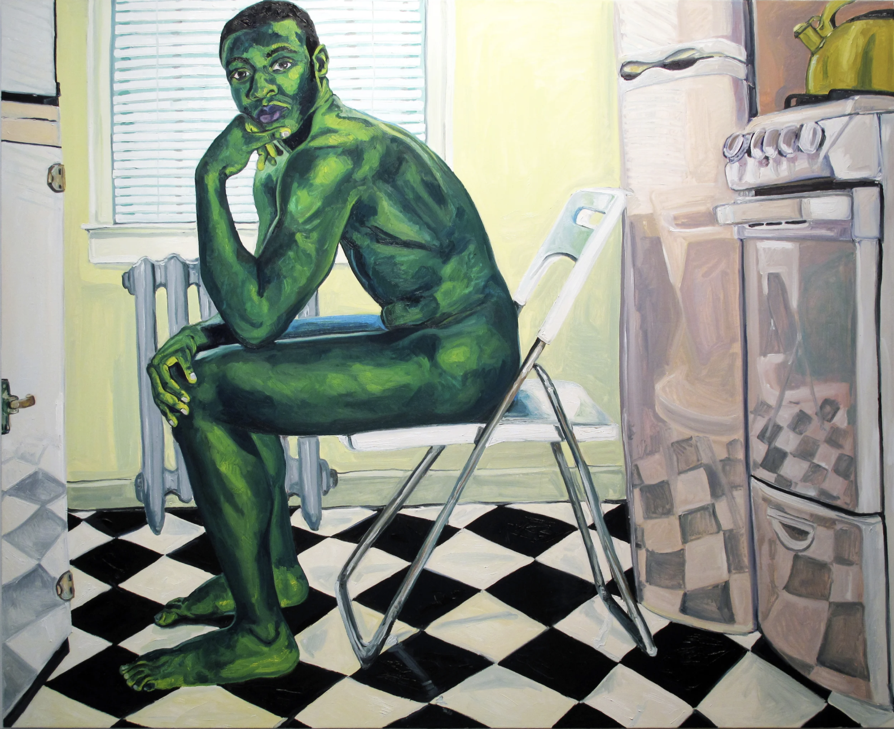
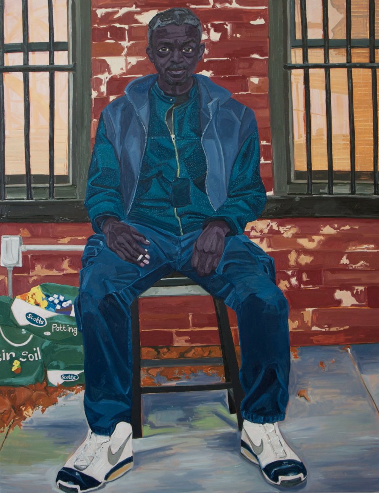
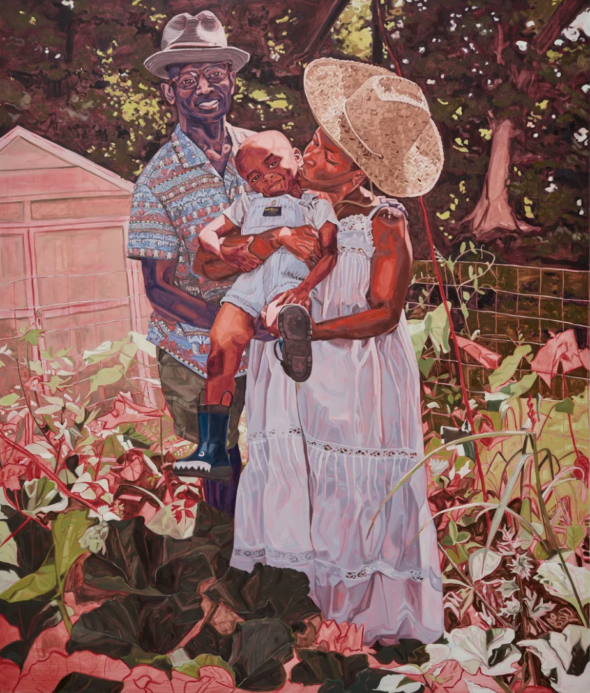

[Your poem’s title]
[Your first line] [Your second line] [Your third line] [Begin another stanza here] [Continue your poem]
ARHA 295 / Week 9 / Due November 2
An exploration of artistic process, a selection of works by two artists, and an original poem reconsidering home.
Artist of the Day / Art21
Jordan Casteel (b.1989) is a figurative artist from Denver, CO. Casteel lives in New York and paints family, friends, neighbors, and strangers in Harlem and New York. She received her BA from Agnes Scott College, Decatur, GA (2011) and her MFA in Painting and Printmaking from Yale School of Art, New Haven, CT (2014).
Video: Jordan Casteel Paints Her Community .
Jordan Casteel's work started from her desire to showcase the humanity of the black man against mainstream framings of criminality and sexualization. Her earlier work, spanning 2013-2014, mostly depicts nude portraits of black men in their homes, a move that has garnered much criticism for its obscenity. Casteel, however, found her choice as intentional and dramatic, intending to refrain from painting their genitalia. Perhaps she was interested in redirecting the viewer’s attention toward the sitters’ faces, gestures, and domestic surroundings to highlight life beyond the body itself.



Artwork information found at jordancasteel.com .
Artist of the Day / Personal selection
[Introduce your second artist and explain why you selected these works. They may be in any medium.]


Artist and artwork information found at [Source name] .
Writing practice
In response to The Poem as Home on the Poetry Foundation website.
[Your first line] [Your second line] [Your third line] [Begin another stanza here] [Continue your poem]